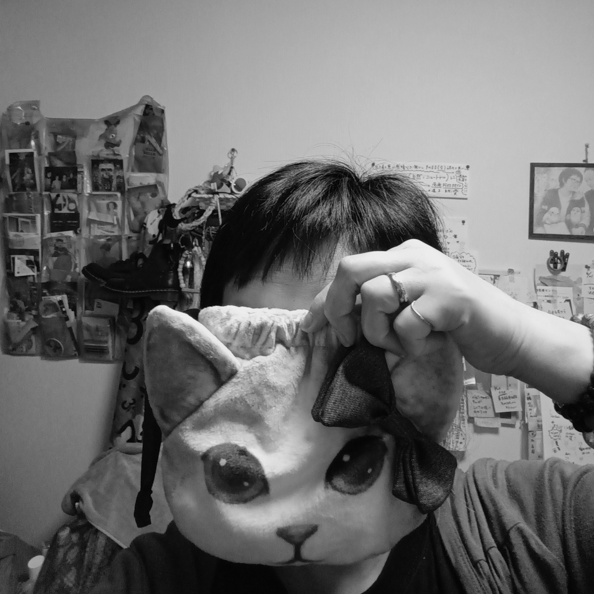

IMAMIYA_MELODY
へんしゅうぶ
* pocot
写真は、歩いた分だけ。
あずける
Google Drive の写真置き場。ここから編集部へ素材を置きます。
写真置き場を開けておきます。 * pocot
ベタ焼き用に読み込む
Driveは写真庫。ここは編集机。必要な分だけ端末から読み込んで、ベタ焼きを作ります。
まだ選択されていません。
選択ログ：待機中
スマホで複数選択できない時は、ZIPでまとめるのが安定です。
整理しておきます。 * pocot
読み込み
受領をお待ちしています。
* pocot
読み込み一覧
直近でベタ焼きに入れた写真。即反映の確認用。
まだありません。
受領棚
届いた写真の置き場。まず整える。それから見る。
0写真
0ページ候補
0評価済み
0未確認
ベタ焼き
机に広げて見る。ギャラリーではなく、編集前のベタ焼き。
表示順を変えられます。 * pocot
未確認
まだ見ていない写真。★評価とは別の、作業チェックです。
0枚
まずはここを少しずつ減らします。 * pocot
確認済み
一度見た写真。評価済み・未評価は混ぜず、作業状態だけを確認します。
0枚
見た写真の棚です。★は評価、ここは通過記録。 * pocot
ピックアップ
★が1つ以上ついた写真だけを見るページ。全部を見直さなくていい。
0枚
★を付けた子だけ、ここに集めます。 * pocot
編集会議
☕ コーヒーをいれました。
今日は10枚だけ見よう。
えらぶ
★★★★★と★★★★☆を中心に表示。「この本に必要か」で見る。
ならべる
ページ候補を並べ替え。余白ページも挿入できます。
めくる
仮の写真集として、ページの流れを見る。
P0
まだページがありません。
編集部だより
作品が育つ過程を、少しだけ残す。
テーマ
迷ったら、ここへ戻る。
編集部員
説明しすぎない奥付として置く。
1号 tricot
2号 pocot
撮影 tricot
pocotは、写真を急かさず、でも見失わないための編集係です。

とっておく
編集メモと並び順を書き出し・読み込みします。画像本体は元写真フォルダを別で保管してください。